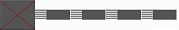
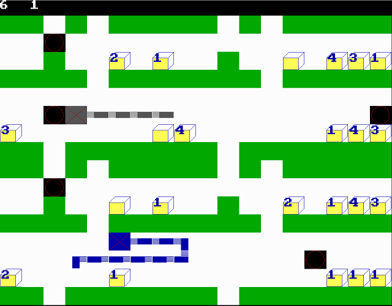

Uživatelský manuál k iSnake
Program je klasická hra had doplněná o další prvky.
Kompatibilita
Program je určen pro systém Windows XP a vyšší pro procesory řady x86.
Instalace
Zkopírujte soubor iSnake.exe po požadovaného adresáře.
Časté problémy
- Program mi nejde spustit. - je možné, že po vybalení z archívu budete mít pro soubor nastavena nedostatečná práva. Je také možné, že dostatečná práva bude mít jen jeden uživatel. Pokud chcete tento problém vyřešit, nastavte požadovanému okruhu uživatelů práva pro čtení a spouštění. Pokud s tímto úkonem máte jakýkoli problém, kontaktujte výrobce Vašeho operačního systému.
Základ hry iSnake
Základem hry je dvojrozměrné hrací pole. V tomto poli se nachází zejména:
- samotný had - reprezentace hráče, je neustále v pohybu. Může po pohybovat prázdným místem. S ostatními položkami hracího pole může docházet k určité interakci. Zabírá proměnlivý počet políček hracího pole. Lze rozlišit hlavu a zbytek těla hada. Had se pohybuje, jak lze očekávat, ve směru hlavy.
- jídlo - hlavním úkolem v této hře je jíst jídlo. Je to útvar zabírající jedno políčko. Je možné jej sníst tak, že had se přesune na políčko s jídlem. Poté jídlo zmizí (je nahrazeno hlavou hada) a hráčovi, který je reprezentován hadem, který snědl dané jídlo, se přičte určitý počet bodů. V současné verzi to je 10 bodů, později se to může změnit. Jídlo je později nahrazeno novým, aby nebylo vyčerpáno.
- zeď - zabírá jedno políčko a je to naprosto nehybný prvek hry, takže by do něj had neměl narazit, jinak zemře.
- cihla (iBrick) - pohyblivý prvek hry. Je možné s ním jakkoli pohybovat. Možné je dokonce pohybovat i s více cihlami zároveň. Jediná podmínka však je, aby byl prostor, kam chcete cihlu přesouvat, volný. Tip: můžete cihly přesouvat tak, aby zavazely druhému hráči.
- cihla z Číny - tato cihla má navíc uvedeno číslo, které udává počet možných posunů. Po jeho vyčerpání cihla zmizí. Ačkoli se může zdát, že cihla s číslem jedna prostě zmizí po nárazu hadem, nestane se tak za všech okolností. Musí totiž za cihlou být volné místo. Pokud za cihlou není volné místo, bude políčko za cihlou posunuto (pokud to je možné) nebo had zemře.
Průběh hry
Na začátku hry je hrací pole zaplněno různými prvky hry (popsáno výše) a dvěma hráči.

V levém horním rohu si můžete všimnout bodů obou hráčů. Vlevo jsou body modrého hráče, napravo jsou body šedého hráče.
Modrý hráč se ovládá pomocí šipek, šedý hráč se ovládá pomocí kláves W, S, A a D. Každá z těchto kláves nastaví hadovi příslušný směr. Pokud se spletete, můžete to do pohybu hada kdykoli změnit. Aby to nebylo tak jednoduché, had se pochopitelně nemůže pohybovat v opačném směru, než směřuje jeho hlava. Pokud se spletete a hada otočíte opačným směrem než hlava, had zemře.
Řešení problémů a dotazů
- Mohu nějak přidat nový level?
- Zatím vyčkejte. Připravujeme pro Vás iSnake Level Store.
- Někde jsem na internetu našel nějaké levely. Mohu je použít?
- Tyto levely nejsou schválené a mohou být nebezpečné! Může dojít k napadení Vašeho počítače nebo v lepším případě jen k nestabilitě aplikace. Uvědomte si, prosím, že jejich použití je nelegální!
- Může tuto hru hrát jiný počet hráčů než dva? To něco takového neumíte vytvořit?
- Vytvořit to samozřejmě dovedeme. Naše filozofie není o přidávání vlastností, které využije naprostá minorita. Tuto filozofii necháváme konkurenci. My se snažíme o maximálně použitelnou a pochopitelnou aplikaci. Z rozsáhlého výzkumu vyplývá, že 95% našich zákazníků by tuto možnost nikdy nevyužilo a 90% zákazníků by touto možností bylo dokonce obtěžováno, protože by dělali tuto hru nepřehlednou.
- Nemyslíte, že váš výzkum dnes již neodpovídá realitě?
- Skupinu co nejbližší našim zákazníkům samozřejmě neustále zkoumáme a je to to nejcennější, co udává směr našeho vývoje. Jste to tedy i Vy, na kom záleží, jak bude hra v budoucnu vypadat. Skutečně je v budoucnu možná podpora například tří uživatelů, pokud to výzkum ukáže jako přínosné.
Podpora
Pokud jste nenašli odpověď na svou otázku v často kladených dotazech, obraťte se, prosím, na nás pomocí formuláře na http://jabb.im/w a můžeme to vyšešit. Další komunikace může probíhat buď mailem, nebo přes Jabber.